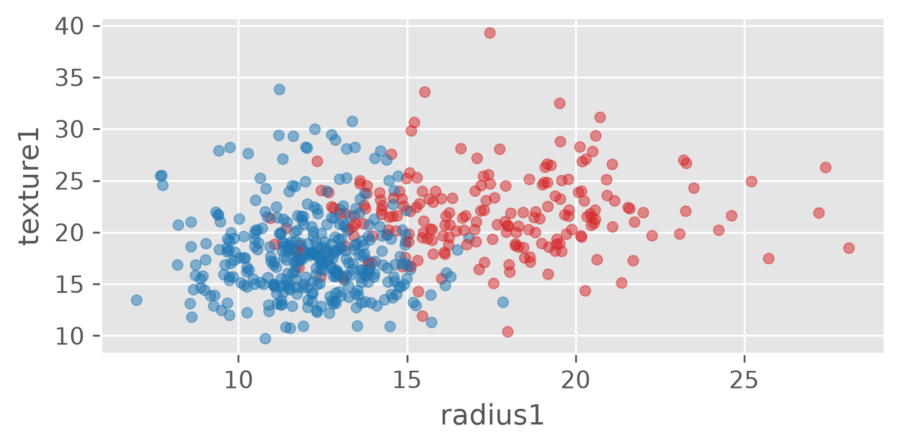

weights = pd.Series(
[68, 83, 112],
index=["alice", "bob", "charles"],
name="weight")
weightsalice 68
bob 83
charles 112
Name: weight, dtype: int64Series, DataFrames and real data
September 2026
A hands-on, 4-hour introduction to pandas, the Python library for tabular data.
Plus: pandas for R users, and what to reach for when pandas is not enough.
Follow along in the notebook:
workshop/Pandas.ipynb locally, ordata.frame.Two objects do almost all the work:
| Object | Shape | R analogue |
|---|---|---|
Series |
1-D, labelled | named vector |
DataFrame |
2-D table | data.frame / tibble |
A DataFrame is a dict of Series that share the same row index.
Every column of a DataFrame is a Series, and every Series prints its dtype (and Name) at the bottom.
Every pandas object carries an index of row labels. You can select by label or by position, and it pays to be explicit.
Elementwise maths and broadcasting of scalars:
From a dict of lists:
Treat it like a dict:
assign() returns a new DataFrame; a lambda sees the intermediate result, so calls chain:
Warning
new = people does not copy. Use people.copy().
col_names = ["ID", "Diagnosis"] + [
f"{m}{i}" for i in (1, 2, 3)
for m in ("radius", "texture", "perimeter", "area", "smoothness", "compactness",
"concavity", "concave_points", "symmetry", "fractal_dimension")]
wdbc = pd.read_csv("../workshop/data/wdbc.data.csv", header=None, names=col_names)
wdbc.head()| ID | Diagnosis | radius1 | texture1 | perimeter1 | ... | compactness3 | concavity3 | concave_points3 | symmetry3 | fractal_dimension3 | |
|---|---|---|---|---|---|---|---|---|---|---|---|
| 0 | 842302 | M | 17.99 | 10.38 | 122.80 | ... | 0.6656 | 0.7119 | 0.2654 | 0.4601 | 0.11890 |
| 1 | 842302 | M | 17.99 | 10.38 | 122.80 | ... | 0.6656 | 0.7119 | 0.2654 | 0.4601 | 0.11890 |
| 2 | 842517 | M | 20.57 | NaN | 132.90 | ... | 0.1866 | 0.2416 | 0.1860 | 0.2750 | 0.08902 |
| 3 | 84300903 | M | 19.69 | 21.25 | 130.00 | ... | 0.4245 | 0.4504 | 0.2430 | 0.3613 | 0.08758 |
| 4 | 84348301 | M | 11.42 | 20.38 | 77.58 | ... | 0.8663 | 0.6869 | 0.2575 | 0.6638 | 0.17300 |
5 rows × 32 columns
The file has no header row, so we pass header=None and supply names=. read_csv also accepts URLs.
texture1 1
area1 1
smoothness1 1
concave_points1 1
dtype: int64| radius1 | texture1 | area1 | |
|---|---|---|---|
| count | 567.000000 | 567.000000 | 567.000000 |
| mean | 14.106118 | 19.288871 | 652.738801 |
| std | 3.512029 | 4.307366 | 350.642272 |
| min | 6.981000 | 9.710000 | 143.500000 |
| 25% | 11.695000 | 16.170000 | 420.050000 |
| 50% | 13.340000 | 18.840000 | 546.400000 |
| 75% | 15.765000 | 21.805000 | 781.800000 |
| max | 28.110000 | 39.280000 | 2501.000000 |
Also: head(), tail(), info().
Split by the values of a column, apply a summary to each group, combine the results.
Every reader has a matching writer: read_csv / to_csv, read_excel / to_excel, read_json / to_json, read_parquet / to_parquet, read_sql / to_sql.

For richer statistical graphics use seaborn, which understands DataFrames directly (see the notebook).
Write the formula as a string; refer to columns by name; @ reaches Python variables.
Note
On Google Colab add engine="python" to eval and query calls.
Both return a sorted copy; pass inplace=True to modify in place. sort_index(axis=1) sorts the columns.
pandas aligns on both row labels and column names:
Also how="left", how="right", left_on=/right_on=, left_index=/right_index=.
Stack rows (aligned by column name):
new_df = df makes a second name for the same object.mean(df); call df.mean().R
pandas wants a dict of lists ({} of []) where R takes named vector arguments.
| R | pandas |
|---|---|
df[rows, cols] |
df.loc[rows, cols] (labels) / df.iloc[...] (positions) |
df$a, df[["a"]] |
df["a"], df.a |
df[, c("a", "c")], select(df, a, c) |
df[["a", "c"]] |
select(df, a:c) |
df.loc[:, "a":"c"] |
df[df$a > 1, ] |
df[df["a"] > 1], df.loc[df.a > 1] |
subset(df, a <= b), filter(df, a <= b) |
df.query("a <= b") |
s %in% c(2, 4) |
s.isin([2, 4]) |
with(df, a + b) |
df.eval("a + b") |
distinct(select(df, a)) |
df[["a"]].drop_duplicates() |
sample_n(df, 10) |
df.sample(n=10) |
query() is the closest thing to dplyr’s filter(); external variables are referenced with @var.
| R (dplyr) | pandas |
|---|---|
mutate(df, c = a - b) |
df.assign(c=df["a"] - df["b"]) |
rename(df, col_one = col1) |
df.rename(columns={"col1": "col_one"}) |
arrange(df, col1, col2) |
df.sort_values(["col1", "col2"]) |
arrange(df, desc(col1)) |
df.sort_values("col1", ascending=False) |
group_by(df, cat) \|> summarise(m = mean(a)) |
df.groupby("cat")["a"].mean() |
group_by(df, cat) \|> summarise(total = sum(a)) |
df.groupby("cat")["a"].sum() |
aggregate(...), tapply(...) |
df.groupby([...]).agg(...), df.pivot_table(...) |
melt(df, id = c("k")) |
pd.melt(df, id_vars=["k"]) |
dcast(df, a ~ b, sum) |
df.pivot_table(values=..., index="a", columns="b", aggfunc="sum") |
Grouping returns the grouping column as the row index of the result.
|> pipe becomes a chain of .method() calls. Wrap the chain in ( ) to split it over lines.inplace=True is the exception, not the rule.df.plot() is the quick equivalent of base plot(); seaborn is the closest thing to ggplot2.A newer DataFrame library written in Rust.
filter, group_byUse when data fits (or nearly fits) in RAM and you want speed without changing tools.
An in-process analytical SQL database.
Use when you think in SQL, or need to join many large files.
Parallel pandas across cores or a cluster.
.compute()Use when you already have pandas code and the data will not fit on one machine.
All three hand results back to pandas (.to_pandas(), .df(), .compute()), so they slot into an existing workflow.
WEHI Education — Data Analysis with pandas